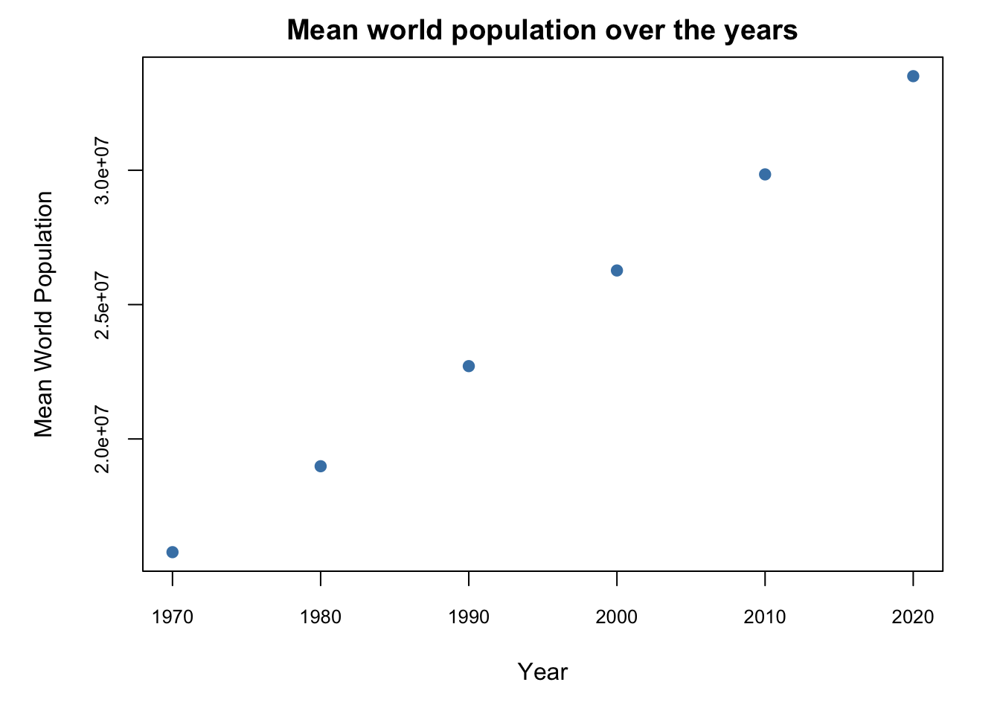
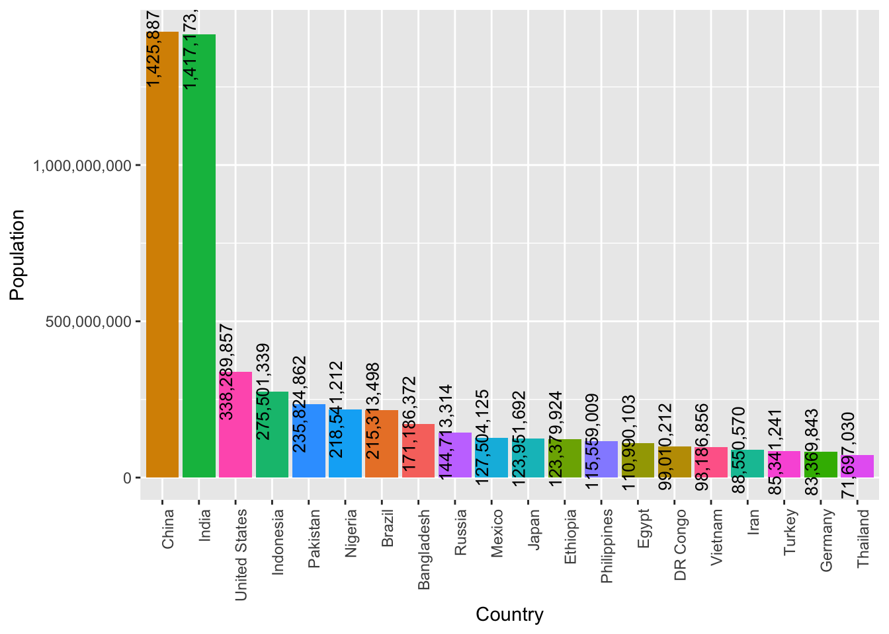
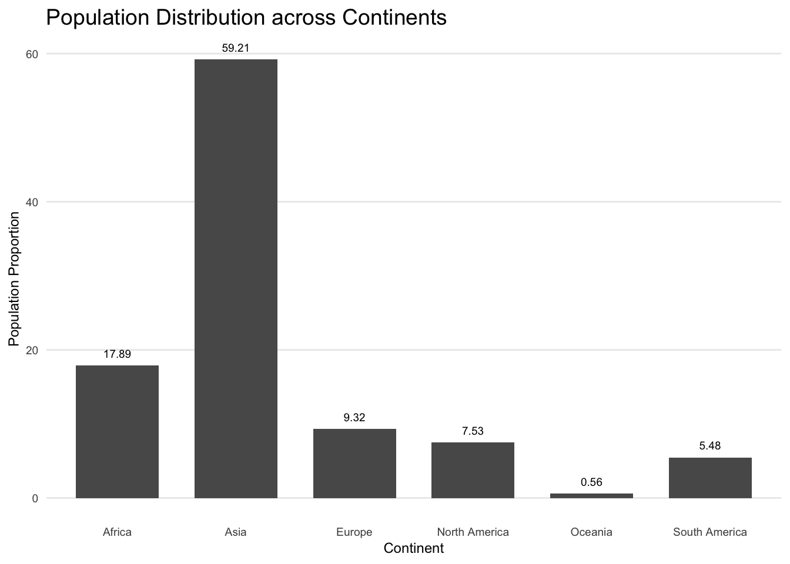
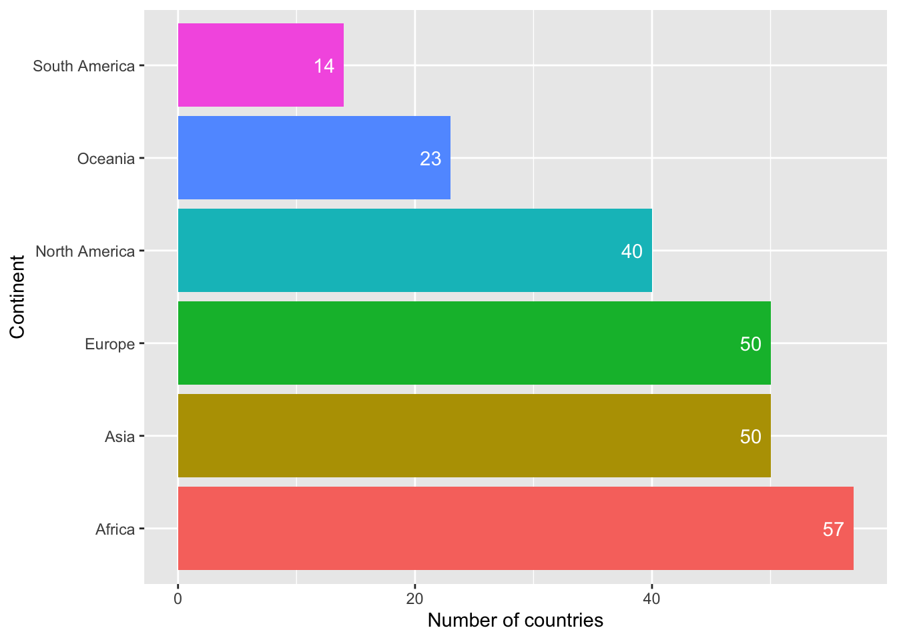
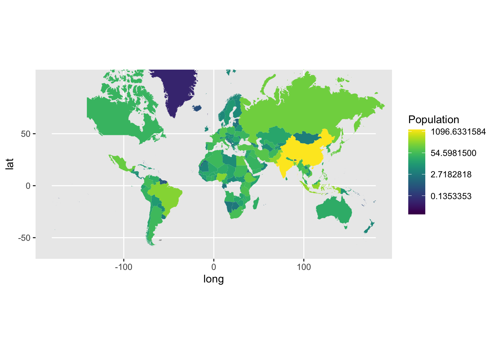
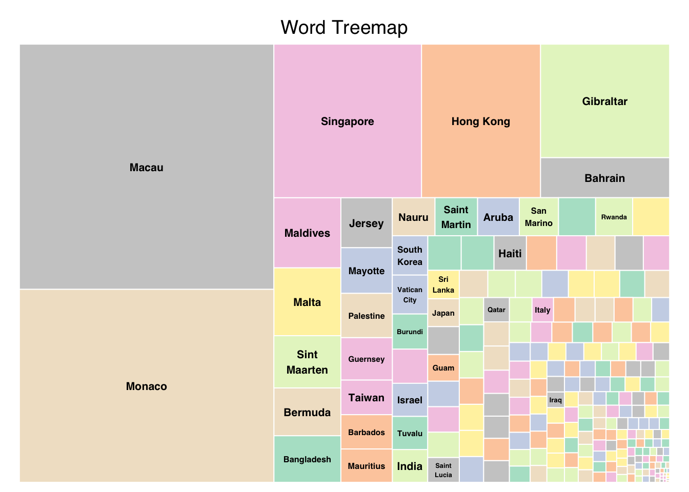
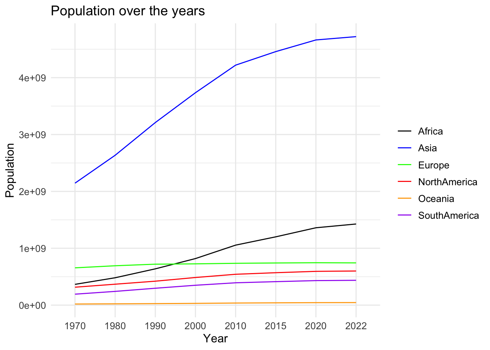
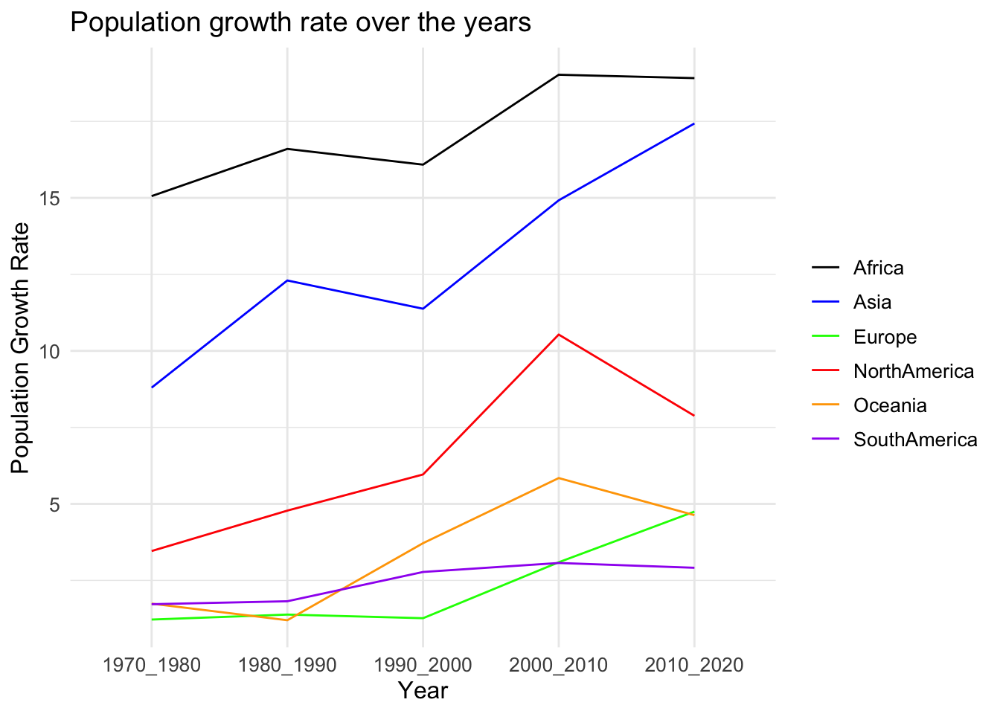
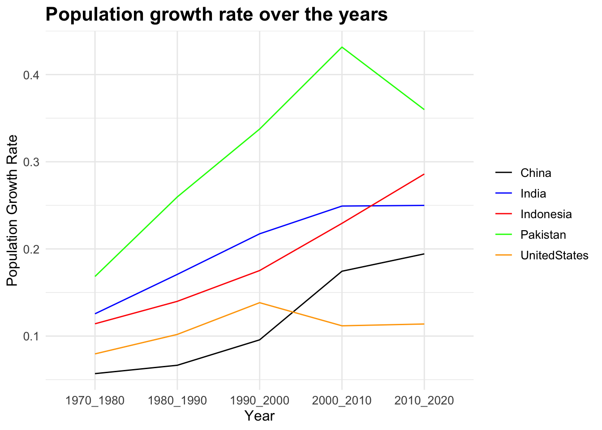

library(tidyverse)
library(here)
library(viridis)
library(wordcloud)
library(wordcloud2)
library(scales)
library(tidyr)
library(ggplot2)
library(treemap)
library(knitr)
library(treemapify)
knitr::opts_chunk$set(echo = TRUE)Final Project
final project
world population
maanusri balasubramanian
Analysing World Population
Introduction
This dataset contains information of the world population over the years (from 1970 to 2022) for every country/territory.
Each entry in the table contains attributes of a specific county/territory, including a 3 digit country/territory code, name of the continent in belongs to, name of the capital, area (in square kilometers), population density (per square kilometer), population growth rate, ranking based on population and the world population percentage.
With this project I plan to:
Conduct an exploratory analysis of the dataset to uncover intriguing patterns and gain deeper insights into the global population and its evolutionary trends.
Visualize the identified patterns to delve into the finer details and gain a comprehensive understanding of sub-patterns.
Reading the data
# Reading the data from world_population.csv
world_population <- here("posts","MaanusriBalasubramanian_FinalProjectData","world_population.csv") %>% read_csv()Rows: 234 Columns: 17
── Column specification ────────────────────────────────────────────────────────
Delimiter: ","
chr (4): CCA3, Country/Territory, Capital, Continent
dbl (13): Rank, 2022 Population, 2020 Population, 2015 Population, 2010 Popu...
ℹ Use `spec()` to retrieve the full column specification for this data.
ℹ Specify the column types or set `show_col_types = FALSE` to quiet this message.On reading the data, we see that it is tidy and doesn’t need extra work, so we move on to understand the data further.
# Reading the latitude and longitude information of different countries
world_loc <- map_data('world')I also loaded the world map data, which contains the latitude and longitude information of each country/territory. I’m planning to use this in world map visualizations to see if there are trends/patterns based on location.
Getting to know the dataset
# peaking into the dataset
head(world_population)# A tibble: 6 × 17
Rank CCA3 `Country/Territory` Capital Continent `2022 Population`
<dbl> <chr> <chr> <chr> <chr> <dbl>
1 36 AFG Afghanistan Kabul Asia 41128771
2 138 ALB Albania Tirana Europe 2842321
3 34 DZA Algeria Algiers Africa 44903225
4 213 ASM American Samoa Pago Pago Oceania 44273
5 203 AND Andorra Andorra la Vella Europe 79824
6 42 AGO Angola Luanda Africa 35588987
# ℹ 11 more variables: `2020 Population` <dbl>, `2015 Population` <dbl>,
# `2010 Population` <dbl>, `2000 Population` <dbl>, `1990 Population` <dbl>,
# `1980 Population` <dbl>, `1970 Population` <dbl>, `Area (km²)` <dbl>,
# `Density (per km²)` <dbl>, `Growth Rate` <dbl>,
# `World Population Percentage` <dbl># number of rows
nrow(world_population)[1] 234# number of columns
ncol(world_population)[1] 17# column names in the dataset
colnames(world_population) [1] "Rank" "CCA3"
[3] "Country/Territory" "Capital"
[5] "Continent" "2022 Population"
[7] "2020 Population" "2015 Population"
[9] "2010 Population" "2000 Population"
[11] "1990 Population" "1980 Population"
[13] "1970 Population" "Area (km²)"
[15] "Density (per km²)" "Growth Rate"
[17] "World Population Percentage"# peaking into the map data
head(world_loc) long lat group order region subregion
1 -69.89912 12.45200 1 1 Aruba <NA>
2 -69.89571 12.42300 1 2 Aruba <NA>
3 -69.94219 12.43853 1 3 Aruba <NA>
4 -70.00415 12.50049 1 4 Aruba <NA>
5 -70.06612 12.54697 1 5 Aruba <NA>
6 -70.05088 12.59707 1 6 Aruba <NA>We can see that the world population dataset has 234 rows and 17 columns. Information about 234 unique countries/territories is present in this table. We can also see that the world _loc dataset has all the needed location information about the countries and territories. We can notice that these two datasets can be merged based on the region column in world_loc and the Country/Territory column in world_population.
Summarizing the data
# Summarizing the world population data
summary(world_population) Rank CCA3 Country/Territory Capital
Min. : 1.00 Length:234 Length:234 Length:234
1st Qu.: 59.25 Class :character Class :character Class :character
Median :117.50 Mode :character Mode :character Mode :character
Mean :117.50
3rd Qu.:175.75
Max. :234.00
Continent 2022 Population 2020 Population 2015 Population
Length:234 Min. :5.100e+02 Min. :5.200e+02 Min. :5.640e+02
Class :character 1st Qu.:4.197e+05 1st Qu.:4.153e+05 1st Qu.:4.047e+05
Mode :character Median :5.560e+06 Median :5.493e+06 Median :5.307e+06
Mean :3.407e+07 Mean :3.350e+07 Mean :3.173e+07
3rd Qu.:2.248e+07 3rd Qu.:2.145e+07 3rd Qu.:1.973e+07
Max. :1.426e+09 Max. :1.425e+09 Max. :1.394e+09
2010 Population 2000 Population 1990 Population
Min. :5.960e+02 Min. :6.510e+02 Min. :7.000e+02
1st Qu.:3.931e+05 1st Qu.:3.272e+05 1st Qu.:2.641e+05
Median :4.943e+06 Median :4.293e+06 Median :3.825e+06
Mean :2.985e+07 Mean :2.627e+07 Mean :2.271e+07
3rd Qu.:1.916e+07 3rd Qu.:1.576e+07 3rd Qu.:1.187e+07
Max. :1.348e+09 Max. :1.264e+09 Max. :1.154e+09
1980 Population 1970 Population Area (km²) Density (per km²)
Min. : 733 Min. : 752 Min. : 1 Min. : 0.026
1st Qu.: 229614 1st Qu.: 155997 1st Qu.: 2650 1st Qu.: 38.418
Median : 3141146 Median : 2604830 Median : 81200 Median : 95.347
Mean : 18984617 Mean : 15786909 Mean : 581449 Mean : 452.127
3rd Qu.: 9826054 3rd Qu.: 8817329 3rd Qu.: 430426 3rd Qu.: 238.933
Max. :982372466 Max. :822534450 Max. :17098242 Max. :23172.267
Growth Rate World Population Percentage
Min. :0.912 Min. : 0.0000
1st Qu.:1.002 1st Qu.: 0.0100
Median :1.008 Median : 0.0700
Mean :1.010 Mean : 0.4271
3rd Qu.:1.017 3rd Qu.: 0.2800
Max. :1.069 Max. :17.8800 # Summarizing the map data
summary(world_loc) long lat group order
Min. :-180.00 Min. :-85.192 Min. : 1.0 Min. : 1
1st Qu.: -67.86 1st Qu.: 1.795 1st Qu.: 381.0 1st Qu.: 25215
Median : 16.59 Median : 32.467 Median : 823.0 Median : 50492
Mean : 10.52 Mean : 24.969 Mean : 801.3 Mean : 50470
3rd Qu.: 78.95 3rd Qu.: 54.029 3rd Qu.:1243.0 3rd Qu.: 75746
Max. : 190.27 Max. : 83.600 Max. :1627.0 Max. :100964
region subregion
Length:99338 Length:99338
Class :character Class :character
Mode :character Mode :character
After summarizing the dataset, I’ve decided to choose these variables for further analysis:
Country/Territory - Name of the place under consideration
Continent - Name of the continent in which the place is located
2022 Population - Population of the place in the year 2022
2020 Population - Population of the place in the year 2020
2015 Population - Population of the place in the year 2015
2010 Population - Population of the place in the year 2010
2000 Population - Population of the place in the year 2000
1990 Population - Population of the place in the year 1990
1980 Population - Population of the place in the year 1980
1970 Population - Population of the place in the year 1970
Density (per km²) - Country/Territory’s population density
Growth Rate - Country/Territory’s population growth rate
Understanding variables of the dataset
# printing the number of continents on which we have information
length(unique(world_population$Continent))[1] 6# printing the mean global population over the years
mean(world_population$`2022 Population`)[1] 34074415mean(world_population$`2020 Population`)[1] 33501071mean(world_population$`2015 Population`)[1] 31729956mean(world_population$`2010 Population`)[1] 29845235mean(world_population$`2000 Population`)[1] 26269469mean(world_population$`1990 Population`)[1] 22710221mean(world_population$`1980 Population`)[1] 18984617mean(world_population$`1970 Population`)[1] 15786909We see that the dataset contains information about countries/territories in 6 continents. We can also see that the mean world population has been steadily increasing over the years.
# printing the countries that are the most and least populous in 2022
world_population[which.max(world_population$`2022 Population`), "Country/Territory"]# A tibble: 1 × 1
`Country/Territory`
<chr>
1 China world_population[which.min(world_population$`2022 Population`), "Country/Territory"]# A tibble: 1 × 1
`Country/Territory`
<chr>
1 Vatican City # printing the countries with the highest and lowest population densities
world_population[which.max(world_population$`Density (per km²)`), "Country/Territory"]# A tibble: 1 × 1
`Country/Territory`
<chr>
1 Macau world_population[which.min(world_population$`Density (per km²)`), "Country/Territory"]# A tibble: 1 × 1
`Country/Territory`
<chr>
1 Greenland As of 2022, China is the most populous country in the world and Vatican city is the least populous. We can also see that Macau has the highest population density, i.e. the number of people in a given unit of area (if population was to be evenly distributed) is the highest here. And Greenland has the least population density.
Due to the large area of China, it is understandable that even though China is the most populous country, its population density isn’t the highest.
Data Cleaning & Mutation
# changing column names
colnames(world_population) <- c("rank", "cca3", "country", "capital", "continent", "2022", "2020", "2015", "2010", "2000", "1990", "1980", "1970", "area", "density", "growth_rate", "world_pop_perc")
head(world_population)# A tibble: 6 × 17
rank cca3 country capital continent `2022` `2020` `2015` `2010` `2000`
<dbl> <chr> <chr> <chr> <chr> <dbl> <dbl> <dbl> <dbl> <dbl>
1 36 AFG Afghanistan Kabul Asia 4.11e7 3.90e7 3.38e7 2.82e7 1.95e7
2 138 ALB Albania Tirana Europe 2.84e6 2.87e6 2.88e6 2.91e6 3.18e6
3 34 DZA Algeria Algiers Africa 4.49e7 4.35e7 3.95e7 3.59e7 3.08e7
4 213 ASM American Sam… Pago P… Oceania 4.43e4 4.62e4 5.14e4 5.48e4 5.82e4
5 203 AND Andorra Andorr… Europe 7.98e4 7.77e4 7.17e4 7.15e4 6.61e4
6 42 AGO Angola Luanda Africa 3.56e7 3.34e7 2.81e7 2.34e7 1.64e7
# ℹ 7 more variables: `1990` <dbl>, `1980` <dbl>, `1970` <dbl>, area <dbl>,
# density <dbl>, growth_rate <dbl>, world_pop_perc <dbl>I renamed the columns in the dataset for easier processing and understanding. Looking into the dataset, we can see that there aren’t any noticeable number of NA values in the table. So there isn’t much cleaning to be done in the dataset.
# merging the world_population and map data
map_data <- world_loc %>% inner_join(world_population, by = c("region" = "country"))
head(map_data) long lat group order region subregion rank cca3 capital
1 -69.89912 12.45200 1 1 Aruba <NA> 198 ABW Oranjestad
2 -69.89571 12.42300 1 2 Aruba <NA> 198 ABW Oranjestad
3 -69.94219 12.43853 1 3 Aruba <NA> 198 ABW Oranjestad
4 -70.00415 12.50049 1 4 Aruba <NA> 198 ABW Oranjestad
5 -70.06612 12.54697 1 5 Aruba <NA> 198 ABW Oranjestad
6 -70.05088 12.59707 1 6 Aruba <NA> 198 ABW Oranjestad
continent 2022 2020 2015 2010 2000 1990 1980 1970 area
1 North America 106445 106585 104257 100341 89101 65712 62267 59106 180
2 North America 106445 106585 104257 100341 89101 65712 62267 59106 180
3 North America 106445 106585 104257 100341 89101 65712 62267 59106 180
4 North America 106445 106585 104257 100341 89101 65712 62267 59106 180
5 North America 106445 106585 104257 100341 89101 65712 62267 59106 180
6 North America 106445 106585 104257 100341 89101 65712 62267 59106 180
density growth_rate world_pop_perc
1 591.3611 0.9991 0
2 591.3611 0.9991 0
3 591.3611 0.9991 0
4 591.3611 0.9991 0
5 591.3611 0.9991 0
6 591.3611 0.9991 0Merging the world_loc and world map data to get location and population information at one place together. This location specific information is now stored in a separate dataset as ‘map_data’.
# mutating the population in 2022 for better representation on the world map
map_data <- map_data %>% mutate(curr_pop = round(`2022` / 1000000, 2))Potential research questions
Which country is the most populated?
How is the world population changing over the years (increasing/decreasing)?
What are the most populous countries?
Is there a trend in population over the continents?
Is the population of a continent impacted by the number of countries in it?
Is there any trend in population over countries geographically?
Are the country size and population density connected in any way?
How is the population growing/shrinking over the years in each continent? Are there some continents in which the growth is more than in others?
Any possibility of the most populous continent to change over the next decade?
Are there any possibilities for change in the order of most populous countries soon?
Visualising the world population over the years
To start off, I want to understand how/rate at which the mean world population has been varying over the years. To do this, we need to plot the mean world population over the years.
# calculate means
y <- c(
mean(world_population$`1970`),
mean(world_population$`1980`),
mean(world_population$`1990`),
mean(world_population$`2000`),
mean(world_population$`2010`),
mean(world_population$`2020`)
)
# labels for the x-axis (years)
x <- c("1970", "1980", "1990", "2000", "2010", "2020")
# assign names to y-values
names(y) <- x
# plotting the trend
par(cex.axis = 0.8, mar = c(5, 5, 2, 2))
plot(y, xaxt = "n", xlab = "Year", ylab = "Mean World Population", col = "steelblue", pch = 19, xlim = c(1, 6))
axis(1, at = 1:6, labels = names(y))
title(main = "Mean world population over the years", cex.main = 1.2)
From the above visualization (plot of mean world population for every 10 years), we can see that the trend has been linear. And that the population has been steadily increasing over the decades.
Population by region/place
Let’s visualize the population of some of the most populous countries or territories in a bar chart.
First we need to find the top 20 most populous countries. So we order the entries in world population in descending order of the region population and extract the top 20 entries.
# ordering the countries based on their population (in the descending order)
most_populous <- world_population[order(world_population$`2022`, decreasing = TRUE),]
top_20 <- most_populous[1:20,]
# formatting the population values for displaying in the graph
top_20$pop_format <- sub("\\.00$", "", sub("(\\d)(?=(\\d{3})+$)", "\\1,", format(top_20$`2022`, big.mark = ",", scientific = FALSE, trim = TRUE), perl = TRUE), perl = TRUE)I’ve also reformatted the population with commas in the right places, to make the values more readable in the graph.
# bar chart showing top 20 countries with the highest populations (2022)
ggplot(top_20, aes(x = reorder(country, -`2022`), y = `2022`, fill = country)) +
geom_bar(stat = "identity") +
labs(x = "Country", y = "Population") +
theme(axis.text.x = element_text(angle = 90, hjust = 1)) +
scale_y_continuous(labels = scales::comma) +
geom_text(aes(label = pop_format), angle = 90, vjust = -0.25, color = "black", size = 3.5) +
theme(legend.position = "none")
From this bar plot we can see that China and India are the most populous countries, they also have a high margin of difference over the countries that follow. United States, Indonesia, Pakistan, Nigeria and many more follow these.
Population by Continent
Next, I want to visualize how the world’s population is distributed across the different continents.
# group by continent and sum populations
continent_population <- aggregate(`2022` ~ continent, data = world_population, FUN = sum)
# calculate proportions of the population by continent and multiply by 100
continent_population$perc <- prop.table(continent_population$`2022`) * 100For this, I’ve aggregated the population data by continent, determined the population proportion for each specific continent, and then multiplied it by 100.
ggplot(continent_population, aes(continent, perc)) +
geom_col(width = .7) +
geom_text(aes(label = round(perc, 2)), size = 2.5, vjust = -1) +
labs(title = "Population Distribution across Continents",
x = "Continent", y = "Population Proportion") +
theme_minimal() +
theme(text = element_text(size = 9),
plot.title = element_text(size = 14),
panel.grid.major.x = element_blank(), panel.grid.minor.y = element_blank())
Number of Countries per Continent
To better understand the population distribution across continents, we first need to understand the number of countries in each continent. We can understand if the population proportion of a continent is attributed to the number of countries it has or to the population density, by getting an idea about the number of countries in each continent.
# calculating number of countries in each continent
conti_country <- world_population %>%
group_by(continent) %>%
summarize(n_countries = n())Now we can plot the number of countries in each continent in a bar chart to visualise this distribution.
ggplot(data = conti_country, aes(x = n_countries, y = continent, fill = continent)) +
geom_col() +
labs(x = "Number of countries", y = "Continent") +
theme(legend.position = "none") +
geom_text(aes(label = n_countries), hjust = 1.4, color = "white")
We can see that Africa has the highest number of countries but still holds only a small proportion of the world population. However, Asia holds a large proportion of the world population and also has a comparabale number of countries. We can also see that even though the proportion of population in Oceania is lesser than in South America, it has more number of countries than South America. So we can’t say that the number of countries in a continent has an impact on the population of the continent.
Population on world map
I’m trying to visualize the population by country on the world map to see if there are any trends in population based on the region.
ggplot(data = map_data) +
geom_polygon(aes(x = long, y = lat, group = group, fill = curr_pop)) +
coord_map(xlim = c(-180, 180)) +
scale_fill_viridis(trans = "log", name = "Population")Warning: Transformation introduced infinite values in discrete y-axis
Based on the visualization, we can’t see any specific trends across the map. However, we can note that the countries towards the north-eastern end of the map(China, India, Russia) are more populous.
Population density country-wise
Understanding the population density distribution over countries can help us understand the criticality of population growth in a country.
# storing only the region and population density information in a dataframe
word_data <- data.frame(text = world_population$country, size = world_population$density)
# sorting the countries in the decreasing order of density
word_data <- word_data[order(word_data$size, decreasing = TRUE), ]Visualizing the population density in a tree map will give us a holistic visual comparison of the differences in the population densities of the countries.
treemap(word_data, index = "text", vSize = "size",
title = "Word Treemap", fontsize.labels = 8,
palette = "Pastel2", border.col = "white", border.lw = 1,
align.entry = c(0, 0, 1, 1))
From the visualization we can see that Macau and Monaco have high population densities. We can note that even though these are not too highly populous(like India or China), they are densely populous.
We can note that many of the small countries are densely populous from this visualization (even if they are not contributing heavily to the world population).
Continent-wise population growth over the years
Firstly, I’m aggregating the yearly population data based on the continent.
# aggregating the yearly population based on the continent
conti_country <- world_population %>%
group_by(continent) %>%
summarize(conti_2022 = sum(`2022`), conti_2020 = sum(`2020`), conti_2015 = sum(`2015`), conti_2010 = sum(`2010`), conti_2000 = sum(`2000`), conti_1990 = sum(`1990`), conti_1980 = sum(`1980`), conti_1970 = sum(`1970`))
conti_country# A tibble: 6 × 9
continent conti_2022 conti_2020 conti_2015 conti_2010 conti_2000 conti_1990
<chr> <dbl> <dbl> <dbl> <dbl> <dbl> <dbl>
1 Africa 1426730932 1360671810 1201102442 1055228072 818946032 638150629
2 Asia 4721383274 4663086535 4458250182 4220041327 3735089604 3210563577
3 Europe 743147538 745792196 741535608 735613934 726093423 720320797
4 North Ameri… 600296136 594236593 570383850 542720651 486069584 421266425
5 Oceania 45038554 43933426 40403283 37102764 31222778 26743822
6 South Ameri… 436816608 431530043 413134396 393078250 349634282 297146415
# ℹ 2 more variables: conti_1980 <dbl>, conti_1970 <dbl>Pivoting the dataset to get continent-wise data in separate columns, for easier processing while plotting.
# Converting into a suitable format for plotting
transposed_table <- as.data.frame(t(conti_country))
col_names <- c("Africa", "Asia", "Europe", "North America", "Oceania", "South America")
colnames(transposed_table) <- col_names
transposed_table <- transposed_table[-1, ]
x = c('2022', '2020', '2015', '2010', '2000', '1990', '1980', '1970')
data <- data.frame(x, "Africa" = as.numeric(transposed_table[["Africa"]]),
"Asia" = as.numeric(transposed_table[["Asia"]]),
"NorthAmerica" = as.numeric(transposed_table[["North America"]]),
"Europe" = as.numeric(transposed_table[["Europe"]]),
"Oceania" = as.numeric(transposed_table[["Oceania"]]),
"SouthAmerica" = as.numeric(transposed_table[["South America"]])
)
# Reshape the data to a tidy format
data_tidy <- data %>% pivot_longer(-x, names_to = "Continent", values_to = "Population")I’m plotting a line chart to better visualize the population trend over the years and using separate lines to represent the population of each continent.
ggplot(data_tidy, aes(x = x, y = Population, color = Continent, group = Continent)) +
geom_line() +
labs(x = "Year", y = "Population", title = "Population over the years") +
scale_color_manual(values = c("Africa" = "black", "Asia" = "blue",
"NorthAmerica" = "red", "Europe" = "green", "Oceania" = "orange",
"SouthAmerica" = "purple")) +
theme_minimal() +
theme(plot.title = element_text(size = 14),
axis.title = element_text(size = 12),
axis.text = element_text(size = 10),
legend.title = element_blank(),
legend.text = element_text(size = 10))
From this graph, we can see that the population in Oceania and Europe hasn’t increased much/at all over the years. However, the population has been increasing exponentially in Africa and Asia (even more swiftly in the case of Asia).
Rate of population growth continent-wise
Looking into the rate at which the population has been changing and the popluation at present, can help in understanding if the population dynamics across continents is about to change anytime soon.
# calculating growth rates over every decade and grouping by continent
conti_grs <- world_population %>%
mutate(gr1970_1980 = (`1980` - `1970`) / `1970`,
gr1980_1990 = (`1990` - `1980`) / `1980`,
gr1990_2000 = (`2000` - `1990`) / `1990`,
gr2000_2010 = (`2010` - `2000`) / `2000`,
gr2010_2020 = (`2020` - `2010`) / `2010`) %>%
group_by(continent) %>%
summarize(gr1970_1980 = sum(gr1970_1980),
gr1980_1990 = sum(gr1980_1990),
gr1990_2000 = sum(gr1990_2000),
gr2000_2010 = sum(gr2000_2010),
gr2010_2020 = sum(gr2010_2020)
)
conti_grs# A tibble: 6 × 6
continent gr1970_1980 gr1980_1990 gr1990_2000 gr2000_2010 gr2010_2020
<chr> <dbl> <dbl> <dbl> <dbl> <dbl>
1 Africa 18.9 19.0 16.1 16.6 15.1
2 Asia 17.4 14.9 11.4 12.3 8.80
3 Europe 4.75 3.09 1.26 1.38 1.22
4 North America 7.88 10.5 5.96 4.78 3.46
5 Oceania 4.63 5.84 3.72 1.20 1.74
6 South America 2.91 3.07 2.78 1.82 1.72Plotting the trend in population growth rates over the years in a line chart below. I’m also representing the growth rate in each continent with a separate line to make suitable comparisons.
# converting into a suitable format for plotting
growth_rates <- as.data.frame(t(conti_grs))
col_names <- c("Africa", "Asia", "Europe", "North America", "Oceania", "South America")
colnames(growth_rates) <- col_names
growth_rates <- growth_rates[-1, ]
growth_rates Africa Asia Europe North America Oceania South America
gr1970_1980 18.913276 17.432118 4.748693 7.878436 4.632448 2.912862
gr1980_1990 19.024179 14.920304 3.093344 10.533882 5.844839 3.069779
gr1990_2000 16.086291 11.377870 1.265000 5.962618 3.716717 2.776081
gr2000_2010 16.600349 12.301519 1.384076 4.781042 1.198996 1.819007
gr2010_2020 15.058021 8.799031 1.221328 3.459849 1.741768 1.722626# re-formatting the data for easier processing
x = c('2010_2020', '2000_2010', '1990_2000', '1980_1990', '1970_1980')
data <- data.frame(x, "Africa" = as.numeric(growth_rates[["Africa"]]),
"Asia" = as.numeric(growth_rates[["Asia"]]),
"NorthAmerica" = as.numeric(growth_rates[["North America"]]),
"Europe" = as.numeric(growth_rates[["Europe"]]),
"Oceania" = as.numeric(growth_rates[["Oceania"]]),
"SouthAmerica" = as.numeric(growth_rates[["South America"]])
)
# Reshape the data to a tidy format
data_tidy <- data %>% pivot_longer(-x, names_to = "Continent", values_to = "Population")ggplot(data_tidy, aes(x = x, y = Population, color = Continent, group = Continent)) +
geom_line() +
labs(x = "Year", y = "Population Growth Rate", title = "Population growth rate over the years") +
scale_color_manual(values = c("Africa" = "black", "Asia" = "blue",
"NorthAmerica" = "red", "Europe" = "green", "Oceania" = "orange",
"SouthAmerica" = "purple")) +
theme_minimal() +
theme(plot.title = element_text(size = 14),
axis.title = element_text(size = 12),
axis.text = element_text(size = 10),
legend.title = element_blank(),
legend.text = element_text(size = 10))
From the above visualization we can see the variation in the rate of population growth over the decades continent-wise. We can note that the population growth rate has been on a decrease over the last decade in North America.
The population growth rate has been almost constant for Africa over the decade, while that of Asia has been on a rise (coherent with the exponential increase in population). Overall, as the population growth rate of Asia is increasing and the population is already higher than the others, we can say that the probability that any other continent overtakes Asia anytime soon, is very low.
Rate of population growth in the topmost populous countries
We’ll similarly observe this trend in the top populous countries.
# getting the top 5 populous countries
top_5 <- most_populous[1:5,]
top_5# A tibble: 5 × 17
rank cca3 country capital continent `2022` `2020` `2015` `2010` `2000`
<dbl> <chr> <chr> <chr> <chr> <dbl> <dbl> <dbl> <dbl> <dbl>
1 1 CHN China Beijing Asia 1.43e9 1.42e9 1.39e9 1.35e9 1.26e9
2 2 IND India New De… Asia 1.42e9 1.40e9 1.32e9 1.24e9 1.06e9
3 3 USA United States Washin… North Am… 3.38e8 3.36e8 3.25e8 3.11e8 2.82e8
4 4 IDN Indonesia Jakarta Asia 2.76e8 2.72e8 2.59e8 2.44e8 2.14e8
5 5 PAK Pakistan Islama… Asia 2.36e8 2.27e8 2.11e8 1.94e8 1.54e8
# ℹ 7 more variables: `1990` <dbl>, `1980` <dbl>, `1970` <dbl>, area <dbl>,
# density <dbl>, growth_rate <dbl>, world_pop_perc <dbl># calculating growth rates over every decade country-wise
top5_grs <- top_5 %>%
mutate(gr1970_1980 = (`1980` - `1970`) / `1970`,
gr1980_1990 = (`1990` - `1980`) / `1980`,
gr1990_2000 = (`2000` - `1990`) / `1990`,
gr2000_2010 = (`2010` - `2000`) / `2000`,
gr2010_2020 = (`2020` - `2010`) / `2010`) %>%
group_by(country) %>%
summarize(gr1970_1980, gr1980_1990, gr1990_2000, gr2000_2010, gr2010_2020)
top5_grs# A tibble: 5 × 6
country gr1970_1980 gr1980_1990 gr1990_2000 gr2000_2010 gr2010_2020
<chr> <dbl> <dbl> <dbl> <dbl> <dbl>
1 China 0.194 0.174 0.0957 0.0665 0.0569
2 India 0.250 0.249 0.217 0.171 0.126
3 Indonesia 0.286 0.229 0.175 0.140 0.114
4 Pakistan 0.360 0.432 0.338 0.260 0.168
5 United States 0.114 0.112 0.138 0.102 0.0796# converting into a suitable format for plotting
grs <- as.data.frame(t(top5_grs))
col_names <- c("China", "India", "Indonesia", "Pakistan", "United States")
colnames(grs) <- col_names
grs <- grs[-1, ]
grs China India Indonesia Pakistan United States
gr1970_1980 0.1943238 0.2499135 0.2859426 0.3598056 0.1138714
gr1980_1990 0.1744061 0.2491629 0.2293389 0.4315091 0.1117850
gr1990_2000 0.09568728 0.21733705 0.17518977 0.33753125 0.13831952
gr2000_2010 0.0665235 0.1707948 0.1398767 0.2596657 0.1019279
gr2010_2020 0.05691953 0.12556166 0.11409816 0.16837997 0.07956466# re-formatting the data for easier processing
x = c('2010_2020', '2000_2010', '1990_2000', '1980_1990', '1970_1980')
data <- data.frame(x, "China" = as.numeric(grs[["China"]]),
"India" = as.numeric(grs[["India"]]),
"Indonesia" = as.numeric(grs[["Indonesia"]]),
"Pakistan" = as.numeric(grs[["Pakistan"]]),
"UnitedStates" = as.numeric(grs[["United States"]])
)
# Reshape the data to a tidy format
data_tidy <- data %>% pivot_longer(-x, names_to = "Country", values_to = "Population")ggplot(data_tidy, aes(x = x, y = Population, color = Country, group = Country)) +
geom_line() +
labs(x = "Year", y = "Population Growth Rate", title = "Population growth rate over the years") +
scale_color_manual(values = c("China" = "black", "India" = "blue",
"Indonesia" = "red", "Pakistan" = "green", "UnitedStates" = "orange"
)) +
theme_minimal() +
theme(plot.title = element_text(size = 16, face = "bold"),
axis.title = element_text(size = 12),
axis.text = element_text(size = 10),
legend.title = element_blank(),
legend.text = element_text(size = 10))
From this plot, we can see the changes in growth rates over the years in the most populous countries. Both China’s and India’s growth rate is on an increase, while rate of increase is higher for China. So we can’t surely say anything about the trend change in the coming decade.
Taking the case of Indonesia and the United States, while US’s growth rate is lightly positive, Indonesia’s growth rate is linearly increasing (population is exponentially increasing). Considering the difference in their respective populations, there is a possibilty for Indonesia to overtake the United States. Similarly, looking at the population growth rates and current populations of Pakistan and Indonesia, we can say that the probability of Pakistan overtaking Indonesia is minimal.
Conclusion
From the analysis done above we were able to answer all of our research questions. We derived that China is the most populous as of 2022 and that the general world population has been on an increase over the decades.We also found that China, India, the United Staes, Indonesia and Pakistan are the most populous countries.
This study established that the population variation doesn’t have anything to do with the geographical location of the countries/territories. And also that the number of constituent countries doesn’t impact a continent population. We also implied observed that the countries of small sizes are more densily populated.
Finally we also analysed the population growth and growth rates country-wise and continent-wise to predict if there will be any changes in the general trend over the next decade.
Bibliography
[1] https://www.kaggle.com/datasets/iamsouravbanerjee/world-population-dataset
[2] https://www.r-project.org/about.html